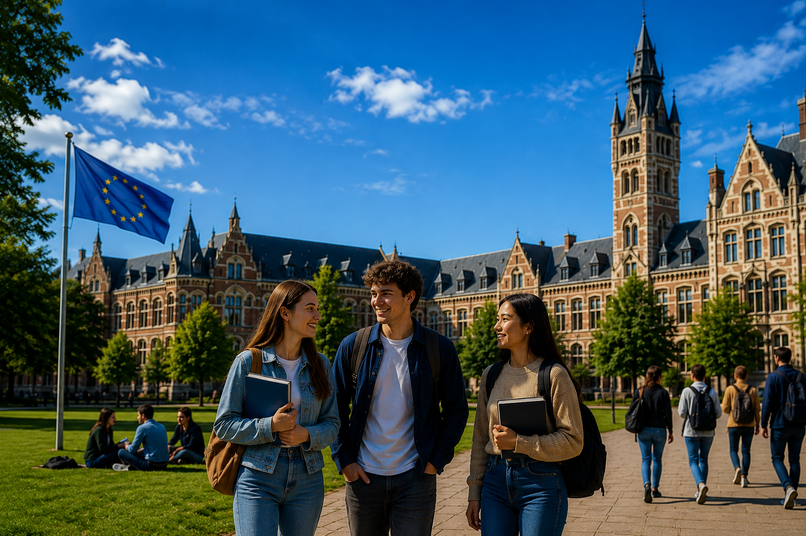

Future In Europe
აღმოაჩინე შენი მომავალი ევროპაში !

აღმოაჩინე შენი მომავალი ევროპაში !
ევროპაში სწავლაზე პირველად მაშინ დავფიქრდი, როდესაც საკუთარი მომავლის დაგეგმვა დავიწყე. მინდოდა მესწავლა ისეთ უნივერსიტეტში, რომელიც არა მხოლოდ ხარისხიან განათლებას მომცემდა, არამედ საერთაშორისო გარემოსა და განვითარების მეტ შესაძლებლობასაც შემიქმნიდა.
თავიდან ინფორმაციის მოძიება ძალიან რთული აღმოჩნდა. საათობით ვკითხულობდი უნივერსიტეტების ოფიციალურ ვებგვერდებს, ვეძებდი სტუდენტების გამოცდილებებს, ვადარებდი პროგრამებს, სწავლის საფასურს, სტიპენდიებსა და ჩარიცხვის მოთხოვნებს. ხშირად საჭირო ინფორმაცია სხვადასხვა საიტზე იყო გაფანტული და ყველაფრის ერთ სივრცეში თავმოყრა შეუძლებელი ჩანდა.
სწორედ ამ მიზეზით შევქმენი Future In Europe — ადგილი, სადაც თავმოყრილია ინფორმაცია ევროპის რამდენიმე გამორჩეულ უნივერსიტეტზე. ჩემი მიზანი იყო დამწყები სტუდენტებისთვის პირველი ნაბიჯის გადადგმა უფრო მარტივი გამეხადა.
თუ შენც ფიქრობ ევროპაში სწავლაზე, ჩემი მთავარი რჩევაა: დაიწყე კვლევა რაც შეიძლება ადრე. შეისწავლე უნივერსიტეტები, დააკვირდი მათ პროგრამებს, დაფინანსების შესაძლებლობებს და არ შეგეშინდეს დიდი მიზნების დასახვის.
შესაძლოა დღეს უბრალოდ ინფორმაციას ეძებ, მაგრამ რამდენიმე წლის შემდეგ სწორედ იმ უნივერსიტეტის სტუდენტი იყო, რომელსაც ახლა ამ საიტზე ათვალიერებ.